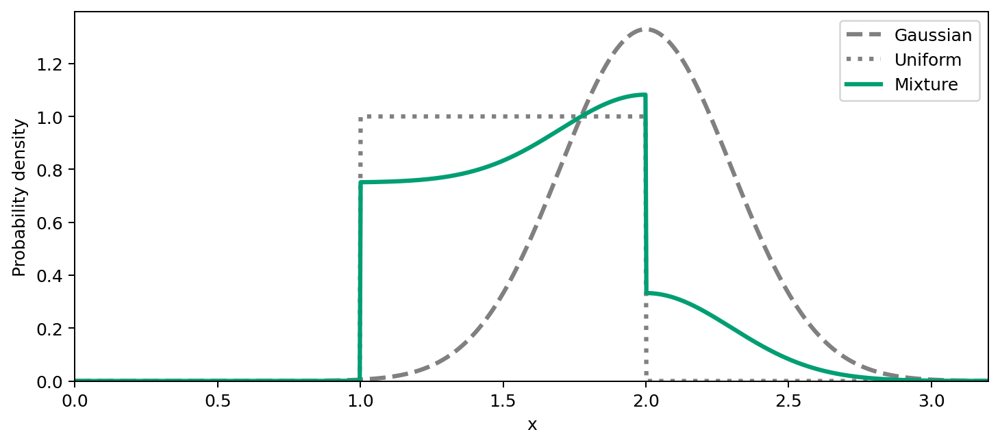
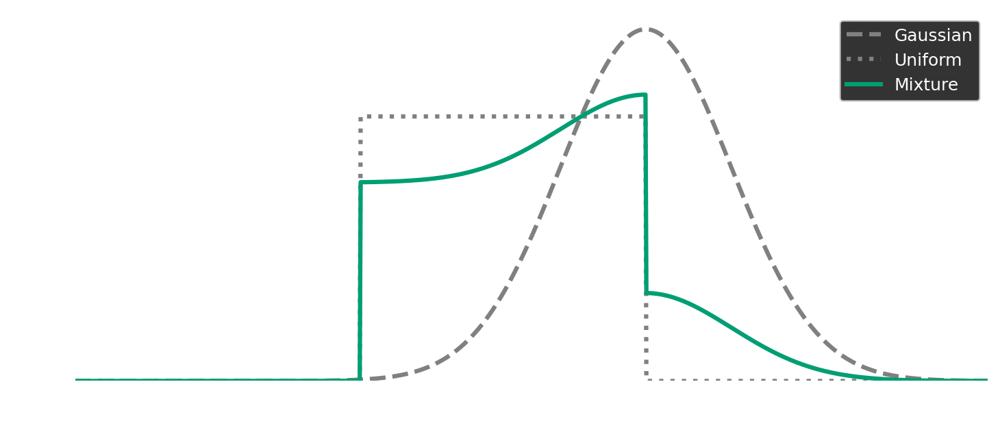

Distributions#
stablebear.distributions provides Gaussian, Uniform, and Mixture
distributions, all instances of Distribution.
Distribution |
Parameters |
Constraints and conventions |
|---|---|---|
|
Finite mean and finite positive standard deviation. |
|
|
Interval |
|
|
Nonempty sequences of equal length. Components may include mixtures. Mixing coefficients must be finite and nonnegative, with at least one positive. They are normalized to sum to one at construction. |
Parameters can be passed by position or by keyword:
import stablebear as sb
gaussian = sb.distributions.Gaussian(2.0, 0.3)
uniform = sb.distributions.Uniform(start=1.0, end=2.0)
mixture = sb.distributions.Mixture(
[gaussian, uniform],
coefficients=[0.25, 0.75], # Need not sum to one; normalized automatically.
)
The probability densities of these three distributions can be plotted using
weight (see Evaluating weights for details).




Show code
import matplotlib.pyplot as plt
import numpy as np
import stablebear as sb
def plot_distribution_densities():
gaussian = sb.distributions.Gaussian(2.0, 0.3)
uniform = sb.distributions.Uniform(start=1.0, end=2.0)
mixture = sb.distributions.Mixture(
[gaussian, uniform], coefficients=[0.25, 0.75]
)
x = np.linspace(0, 3.2, 1024)
fig, ax = plt.subplots(figsize=(8, 3.5), layout="constrained")
for distribution, label, style in zip(
[gaussian, uniform, mixture],
["Gaussian", "Uniform", "Mixture"],
["--", ":", "-"],
):
ax.plot(
x, distribution.weight(x), linestyle=style,
color="0.5" if label != "Mixture" else "#009e73",
linewidth=2.5, label=label,
)
ax.set(xlabel="x", ylabel="Probability density", xlim=(0, 3.2))
ax.set_ylim(bottom=0)
ax.legend()
return fig
fig = plot_distribution_densities()
plt.show()
The solid curve combines 25% of the Gaussian density (dashed) and 75% of the
Uniform density (dotted). Here, all three curves integrate to one. For an
unbounded Uniform interval, weight defines a weighting function rather
than a probability density.
Evaluating weights#
Pass a scalar or an array of filter values to
weight to evaluate
sampling weights:
gaussian.weight(2.0) # approximately 1.3298
uniform.weight([0.5, 1.0, 1.5]) # array([0., 1., 1.])
Scalar input returns a float. Array-like input returns a float64 NumPy array with the same shape, including multidimensional grids. Values must be finite real numbers.
When the distribution represents a probability distribution, weight
evaluates its probability density. This includes Gaussian and bounded Uniform
distributions, as well as mixtures of these distributions.
Unbounded Uniform intervals are a special case: they use weight one on
[start, end). Either endpoint may be infinite; Uniform(-inf, inf)
gives weight one everywhere. These weights do not integrate to one, so an
unbounded Uniform represents a weighting function, not a probability
distribution. The same exception applies to mixtures containing an unbounded
Uniform component with a positive coefficient, including nested mixtures.